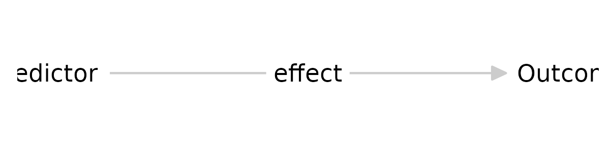
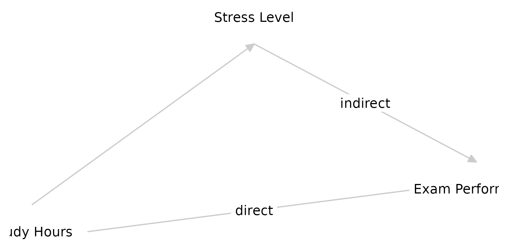

Specifying Augmented Directed Acyclic Graphs
augmented_dags.RmdIn this vignette, we introduce a specification for
augmented Directed Acyclic Graphs (aDAGs). We will
overload regular DAGs as specified using the dagitty
R-package. While dagitty provides standard facilities for
declaring nodes, edges, exposures, and outcomes in causal frameworks, we
augment the DAG with additional metadata fields to make
it more conducive to theory specification. These metadata fields do not
interfere with regular use of the DAG in dagitty.
The metadata fields in an aDAG include:
-
tagsfor identifying nodes of interest in causal inference. This field can take on values likeexposure,outcome, andunobserved. -
posfor nodes, which defines the layout position in the X and Y dimension, e.g.,pos="0,1is positioned at coordinates X = 0 and Y = 1. This metadata field is used bydagitty. -
labelfor nodes or edges: A descriptive label used for visualization and reporting. This is a new metadata field. -
distributionfor nodes: The assumed distribution-generating function for the variable associated with a node. For exogenous nodes, this constitutes the distribution of the variable associated with the node itself; for endogenous nodes, this constitutes the residual distribution of the associated variable. This is a new metadata field. -
formfor edges: A function specification (in a form interpretable byas.formula()) that describes how the variable associated with a child node is calculated from its parents. This is a new metadata field.
Throughout the vignette, we will illustrate how to write an augmented
DAG, how to parse and inspect it with dagitty,
theorytools, and tidySEM (for plotting), and
how to leverage these additional properties for further modeling or
simulation tasks.
library(theorytools)
library(dagitty)
library(tidySEM)
#>
#> Attaching package: 'tidySEM'
#> The following object is masked from 'package:dagitty':
#>
#> edgesA Basic DAG
The usual syntax for specifying a DAG in the dagitty
R-package is something like:
There are several tags that can be used in dagitty. Note
that quotation marks used in tags must be double quotes
", so it makes sense to wrap the whole DAG syntax in single
quotes ':
Augmented DAGs (aDAGs)
In our augmented specification, we add additional properties as metadata fields.
Below, we detail each new property:
label (Nodes/Edges)
- Usage: Provide a descriptive name for the node or edge.
-
Example:
X [label="Study hours"]
The label is used, for example, by tidySEM to label
nodes and edges:
library(tidySEM)
g <- dagitty('dag {
X [label="Predictor", pos="0,0"]
Y [label="Outcome", pos="1,0"]
X -> Y [label="effect"]
}')
graph_sem(g, text_size = 2)
2. distribution (Nodes)
Usage: References a function that generates data for exogenous variables, or that describes the residual distribution for endogenous variables. The function can reference the argument
nto determine sample size. For example, to specify a node comprising five groups with total sample sizen, one could usesample.int(n = 5, size = n, replace=TRUE). If the argumentnis not explicitly provided,theorytoolschecks ifnis a formal argument of the function, and assigns it.-
Examples:
-
X [distribution="rnorm()"]: NodeXis an exogenous variable drawn from a normal distribution with default arguments. -
Y [distribution="rnorm()"]: NodeYhas residuals assumed to be normally distributed with default arguments.
-
g <- dagitty('dag {
X [distribution="rbinom(size = 2, prob = .5)"]
Y [distribution="rnorm()"]
X -> Y [form=".2*X"]
}')3. form (Edges)
Usage: Provides a formula-like specification for how a child node depends on its parent node(s). It should be something that
as.formula()can parse.Examples:
X -> Y [form=".2*X"]indicates thatYis a linear function of.2timesXX -> Y [form="X:Z"]indicates thatYdepends on an interaction betweenXandZX -> Y [form="X^2"]indicates thatYdepends on a quadratic function ofX
g <- dagitty('dag {
X [distribution="rbinom(size = 2, prob = .5)"]
Y [distribution="rnorm()"]
X -> Y [form=".2*X"]
}')Example: Augmented DAG Specification
Below is a simple, hypothetical DAG showing how to combine these ideas. This DAG posits:
-
X: Number of study hours, anexposure. Values are randomly sampled from 1-20 hours. -
Z: Stress level, an exogenous covariate, exponentially distributed (i.e., right-skewed, most people are not very stressed). -
Y: Exam performance an outcome depending onXandZ, with normally distributed residuals.s
g <- dagitty('dag {
X [exposure,
pos="0,0",
label="Study Hours",
distribution="sample.int(n = 20, size = n, replace = TRUE)"]
Z [label="Stress Level",
pos=".5,1",
distribution="rexp()"]
Y [outcome,
pos="1,.2",
label="Exam Performance", distribution="rnorm()"]
X -> Y [label="direct", form="0.5+X"]
X -> Z
Z -> Y [label="indirect", form="2*Z"]
}')
graph_sem(g, text_size = 3)
Parsing DAG Properties
Augmented DAGs are interoperable with dagitty, but the
dagitty package is not natively aware of the additional
metadata fields used in theorytools, like
distribution or form. To access the augmented
properties of aDAGs, the theorytools package uses
tidySEM. The purpose of the tidySEM package is
to plot graphs (structural equation models and DAGs) as
ggplot objects, which can be further customized using
regular ggplot2 code. It contains parsing functions to
extract nodes and edges from a variety of objects, including
dagitty graphs. The functions get_nodes() and
get_edges() parse the nodes and edges of aDAGs,
respectively:
get_nodes(g)
#> name exposure x y label
#> 1 X TRUE 0.0 0.0 Study Hours
#> 2 Y NA 1.0 0.2 Exam Performance
#> 3 Z NA 0.5 1.0 Stress Level
#> distribution outcome shape
#> 1 sample.int(n = 20, size = n, replace = TRUE) NA none
#> 2 rnorm() TRUE none
#> 3 rexp() NA none
get_edges(g)
#> from to e label form arrow color
#> 1 X Y -> direct -X^2+4*X last gray80
#> 2 X Z -> <NA> <NA> last gray80
#> 3 Z Y -> indirect 2*Z last gray80Interpreting distribution and form in
Simulation
A primary motivation for these augmented properties is simulation. For example, you might simulate data by:
- Generating
Xfromsample.int(n). - Generating
Zfromrexp(n). - Generating
Yusing a formula that includesXandZplus a residual fromrnorm(n).
Code to simulate data in line with these metadata can be automatically generated:
set.seed(1)
cat(simulate_data(g, run = FALSE), sep = "\n")
#> # Set random seed
#> set.seed(1140350788)
#> # Set simulation parameters
#> n <- 500
#> # Simulate exogenous nodes
#> X <- sample.int(n = 20, size = n, replace = TRUE)
#> # Simulate endogenous nodes
#> Z <- 0.09 * X + rexp(n = n)
#> Y <- 2 * Z + X * (4 - 0.49 * X) + rnorm(n = n)
#> df <- data.frame(
#> X = X,
#> Y = Y,
#> Z = Z
#> )To illustrate, we show a scatter plot of data simulated using this code:
df <- simulate_data(g, run = TRUE)
ggplot2::ggplot(df, aes(x=X,y=Y,color=Z))+geom_point()You can use this script, for example, to generate synthetic data and build a reproducible analysis pipeline for a Preregistration-As-Code (Peikert, Van Lissa, and Brandmaier 2021; Van Lissa 2022).
Additional Notes
-
Syntax Quoting: In R, there are rules about using
quotes within quotes. The
dagittypackage only recognizes double quotes (" ") inside graph specifications. This means you must wrap the graph specification text in single quotes (' '). Alternatively, you can escape every double quote inside the graph specification, which is not recommended because it is a hassle. -
Multiple Parents: If a node has multiple parents,
you can either specify multiple edges with their own
formproperties or a single edge with a combined formula. They are combined, and unique terms are retained. -
Order of Declaration:
dagittydoes not mind the order in which nodes are declared, but you’ll need a topological order (no cycles) for valid DAG generation and simulation. -
Integration with
dagittyFunctions: The standarddagittyfunctions (e.g.,adjustmentSets()) only look for recognized tags likeexposureandoutcome. They ignore custom properties likedistributionandform, but these do not interfere with normal usage.